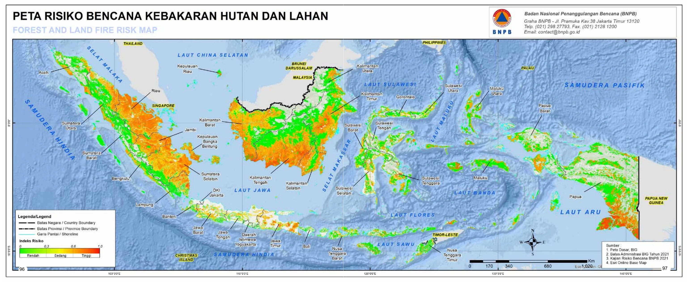
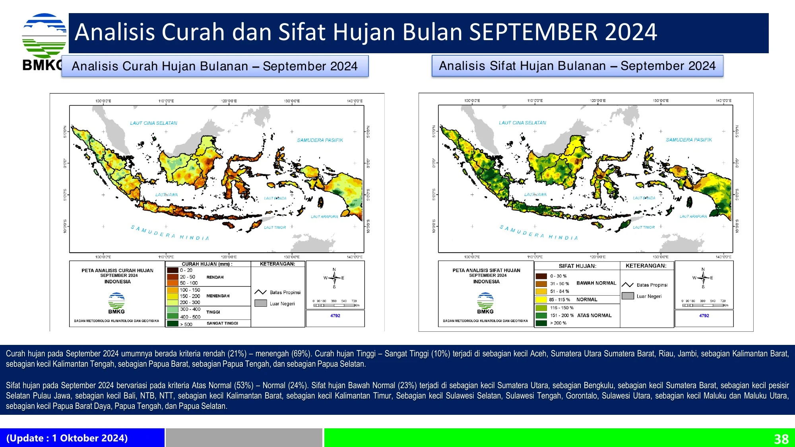
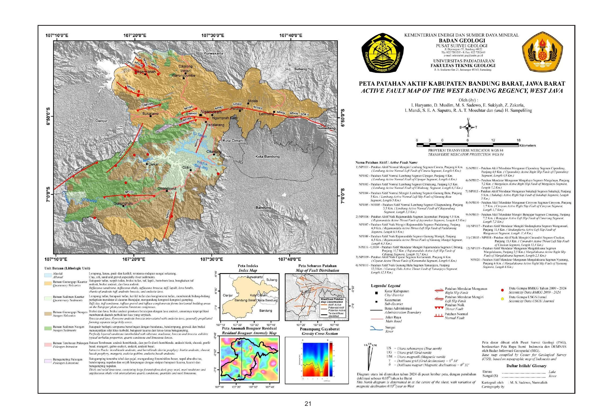
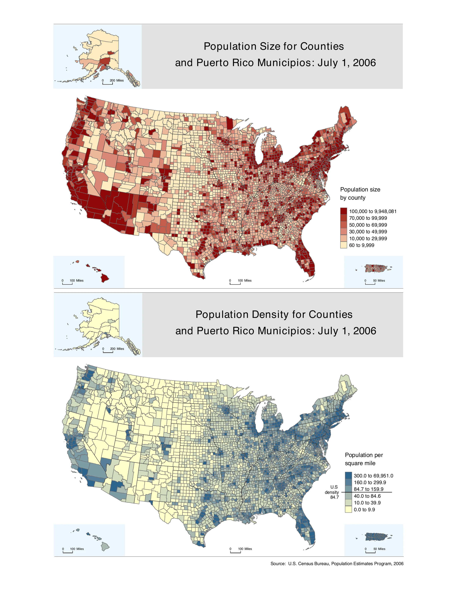
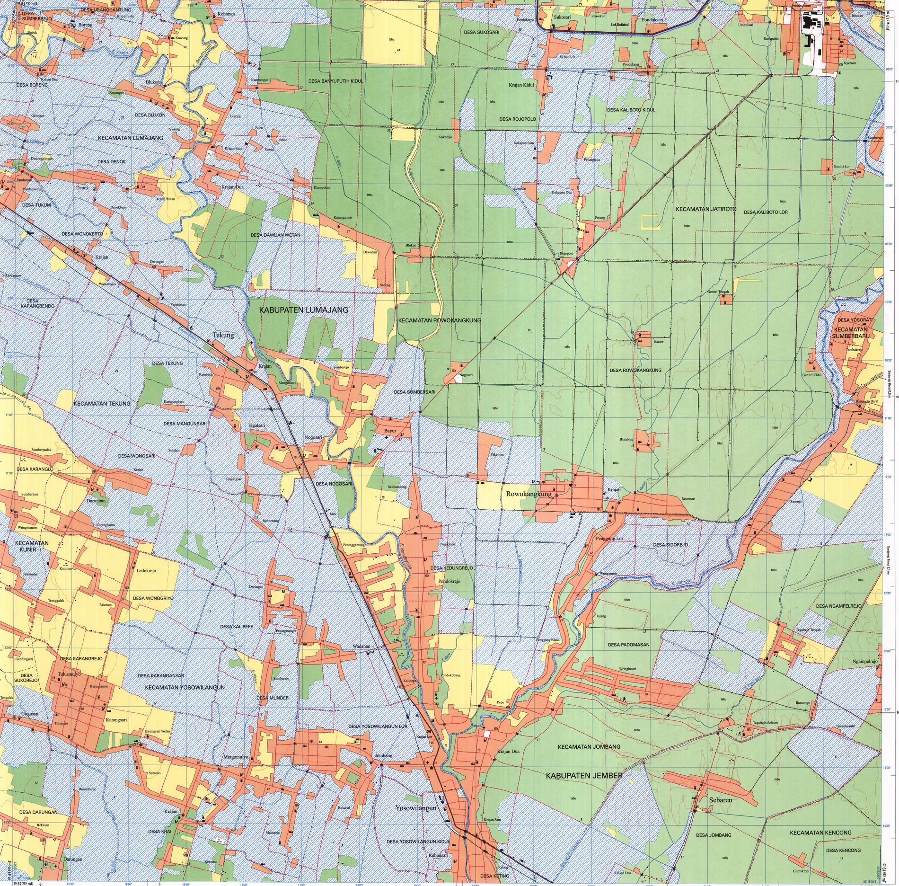
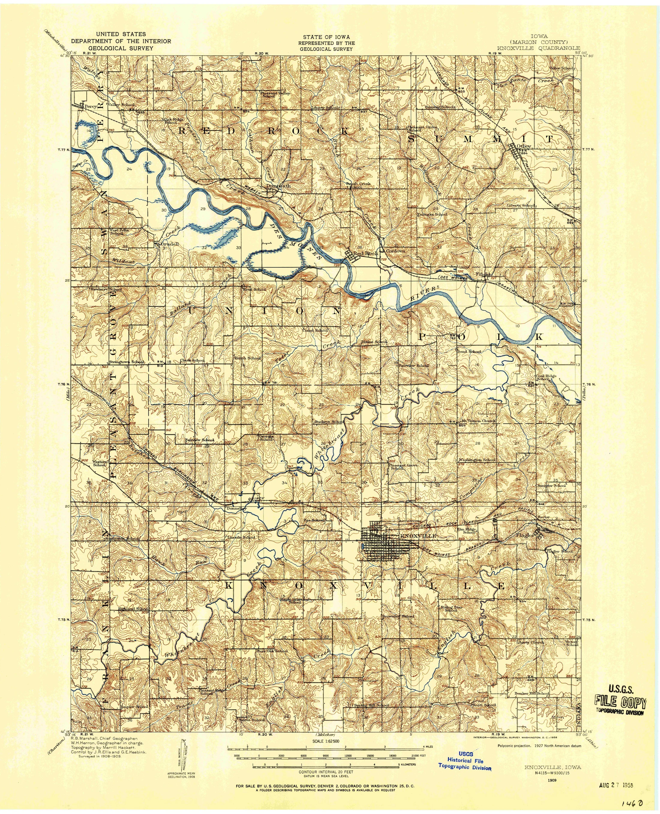
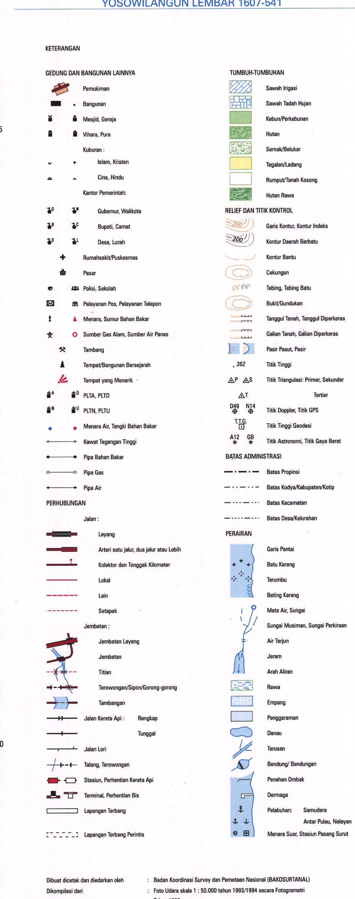
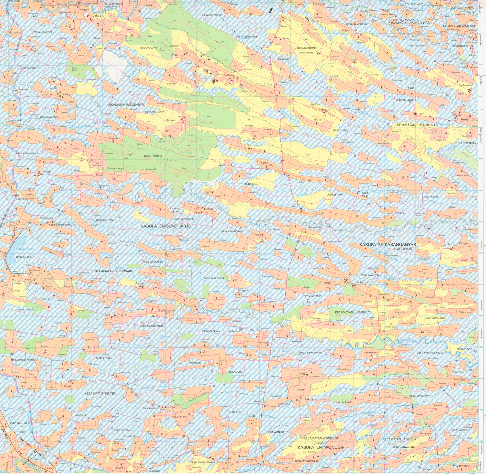
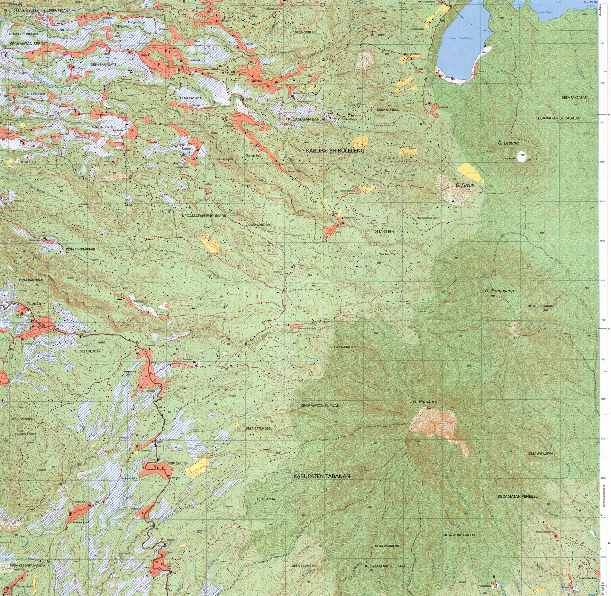

Peta umum
Definisi: peta yang menampilkan berbagai unsur geografis sekaligus untuk memberikan gambaran umum suatu wilayah.
- jalan
- sungai
- permukiman
- relief
- vegetasi/penggunaan lahan
- batas dan nama geografis
Contoh: RBI dan peta topografi.
Materi membahas pembacaan peta secara runtut, mulai dari pengenalan jenis peta, pembacaan tema dan legenda, pengenalan Peta Rupabumi Indonesia (RBI), penggunaan koordinat, pemahaman relief melalui kontur, hingga penyusunan interpretasi berdasarkan bukti pada peta.
Setelah mengikuti materi ini, mahasiswa diharapkan mampu:
Istilah “jenis peta” dapat membingungkan jika dasar pembagiannya tidak disebutkan. Peta dapat diklasifikasikan dengan beberapa dasar yang berbeda. Satu peta dapat masuk ke beberapa kategori sekaligus.
Apa yang menjadi isi utama?
Seberapa besar perbandingan peta dengan bumi?
Peta digunakan untuk apa?
Bagaimana informasi ditampilkan?
Contoh: RBI 1:25.000 dapat dibaca sebagai peta umum, berskala relatif besar, berfungsi sebagai peta referensi/topografi, dan menggunakan banyak simbol titik, garis, serta area.
Definisi: peta yang menampilkan berbagai unsur geografis sekaligus untuk memberikan gambaran umum suatu wilayah.
Contoh: RBI dan peta topografi.
Definisi: peta yang menonjolkan satu tema atau fenomena tertentu. Unsur dasar hanya digunakan sebagai konteks.
Contoh: peta kepadatan penduduk per kecamatan.
Kunci: peta umum menjawab banyak pertanyaan referensi tentang wilayah; peta tematik sengaja memusatkan perhatian pada satu tema.
Peta tematik tidak cukup dibaca berdasarkan warna. Interpretasi harus dimulai dengan mengenali variabel, satuan, waktu, wilayah, cara pengelompokan data, dan arti simbol.

Risiko kebakaran hutan dan lahan. Tema ditentukan dari judul peta, bukan hanya dari warna yang terlihat.
Variabel yang dipetakan adalah indeks risiko dengan rentang 0–1. Nilainya bukan jumlah kejadian kebakaran.
Peta mencakup wilayah Indonesia. Batas provinsi dan nama pulau digunakan sebagai informasi lokasi.
Hijau menunjukkan kelas rendah, kuning–jingga kelas sedang, dan merah kelas tinggi.
Pembacaan dilakukan dengan mengenali kelompok wilayah berisiko relatif tinggi, sedang, dan rendah.
Peta risiko tidak menyatakan bahwa kebakaran sedang terjadi dan tidak menunjukkan waktu terjadinya kebakaran.

Prinsip pembacaan: curah hujan tinggi tidak selalu berarti “atas normal”. Nilai pada peta kiri dan kelas pada peta kanan harus dibaca dengan legenda masing-masing.

Jejak dan jenis patahan menjadi unsur utama yang ditelusuri pada peta.
Lokasi data gempa memberikan informasi tambahan mengenai aktivitas kegempaan.
Warna area membedakan satuan batuan atau litologi yang terdapat di wilayah tersebut.
Informasi dasar: relief, sungai, jalan, dan nama tempat membantu pembaca menentukan lokasi serta hubungan spasial antarunsur.
Prinsip hierarki: peta tematik dapat memuat banyak unsur, tetapi simbol yang mewakili tema utama harus paling mudah dikenali. Unsur lain berfungsi sebagai konteks geografis.
| Contoh | Variabel utama | Bentuk simbol dominan | Pertanyaan yang dijawab |
|---|---|---|---|
| Risiko kebakaran hutan dan lahan | Indeks risiko 0–1 | Warna area/permukaan | Wilayah mana yang memiliki tingkat risiko relatif lebih tinggi? |
| Curah hujan dan sifat hujan | Jumlah hujan (mm) dan perbandingan terhadap normal (%) | Warna area/permukaan | Berapa jumlah hujan dan bagaimana kondisinya terhadap normal? |
| Patahan aktif Bandung Barat | Jejak patahan, satuan batuan, dan lokasi gempa | Titik, garis, dan area | Di mana jejak patahan berada dan unsur geologi apa yang menyertainya? |

Peta topografi adalah peta yang menunjukkan lokasi berbagai objek geografis sekaligus bentuk permukaan bumi. Ciri pentingnya adalah penggunaan informasi elevasi, terutama garis kontur, untuk menggambarkan relief.
RBI adalah Peta Rupabumi Indonesia. Pada contoh RBI yang digunakan di materi ini terlihat jaringan jalan, sungai, permukiman, penggunaan lahan, batas administrasi, nama geografis, grid, serta garis kontur.


Sebagai pembanding terminologi internasional, USGS menjelaskan bahwa ciri khas peta topografi adalah contour lines untuk menunjukkan bentuk permukaan bumi, disertai berbagai fitur seperti jalan, sungai, dan nama tempat. USGS — What is a topographic map?
Pembacaan peta umum/topografi dilakukan secara bertahap agar hubungan antarunsur dapat dikenali dengan tepat.
Legenda adalah bagian peta yang menjelaskan arti simbol. Warna dan bentuk simbol tidak selalu memiliki arti yang sama pada setiap peta; maknanya harus diperiksa melalui legenda.

Dipakai ketika objek direpresentasikan sebagai lokasi, misalnya titik tinggi atau fasilitas tertentu.
Untuk objek memanjang, misalnya jalan, sungai, batas, dan kontur.
Untuk objek yang mempunyai luasan, misalnya danau, hutan, sawah, dan permukiman.
Penting: ukuran simbol bukan selalu ukuran fisik sebenarnya. Jalan bisa digambar lebih lebar daripada lebar sebenarnya agar tetap terlihat. Ini akan menjadi jembatan menuju konsep generalisasi pada Pertemuan 7.
Koordinat adalah angka yang digunakan untuk menyatakan posisi. Grid adalah jaringan garis referensi pada peta yang membantu pembaca menentukan posisi.
| Istilah | Pengertian | Contoh |
|---|---|---|
| Geographic coordinates | Posisi berdasarkan latitude dan longitude. | 7° LS, 110° BT |
| Graticule | Jaringan garis latitude dan longitude pada peta. | parallel dan meridian |
| Projected coordinates | Posisi pada bidang datar setelah projection. | Easting dan Northing |
| Grid | Jaringan garis berdasarkan sistem koordinat tertentu untuk membantu pembacaan posisi. | grid UTM |
Materi ini tidak mengulang seluruh pembahasan CRS dari Minggu 5. Fokus Minggu 6 adalah menggunakan grid dan angka koordinat untuk menemukan lokasi pada peta.
Relief adalah variasi tinggi-rendah dan bentuk permukaan bumi. Relief mencakup dataran, lereng, bukit, lembah, punggungan, dan pegunungan.
Peta dua dimensi tidak dapat menampilkan bentuk tiga dimensi secara langsung. Karena itu, salah satu cara yang sangat umum adalah menggunakan garis kontur.
Garis kontur adalah garis yang menghubungkan titik-titik yang mempunyai elevasi sama. Garis ini bersifat konseptual dan tidak terdapat secara fisik di lapangan.
USGS mendefinisikan contours sebagai garis yang menghubungkan titik dengan elevasi sama. USGS Map Symbol Guide.
Interval kontur adalah selisih elevasi antara dua garis kontur yang berurutan. Interval kontur berbeda dari jarak horizontal antargaris pada peta.
Perubahan elevasi yang sama terjadi pada jarak horizontal yang pendek.
Interpretasi: lereng lebih curam.
Perubahan elevasi yang sama terjadi pada jarak horizontal yang lebih panjang.
Interpretasi: lereng lebih landai.
Kesalahan umum: kontur rapat tidak otomatis berarti tempatnya lebih tinggi. Kontur rapat berarti lereng lebih curam. Tinggi-rendah dibaca dari nilai elevasinya.
Kontur tertutup dengan nilai elevasi yang meningkat ke arah pusat menunjukkan bagian yang semakin tinggi.
Bagian rendah memanjang. Kontur yang memotong alur lembah sering membentuk pola V; ujung V umumnya menunjuk ke arah elevasi lebih tinggi atau hulu.
Bagian tinggi memanjang yang memisahkan dua sisi lereng atau lembah. Polanya perlu dibaca bersama nilai kontur dan arah penurunan medan.
Air mengalir dari elevasi yang lebih tinggi menuju elevasi yang lebih rendah. Untuk membaca arah aliran dari peta topografi:
Arah aliran tidak ditentukan dari posisi atas-bawah pada halaman, melainkan dari elevasi dan bentuk kontur.
Tiga lembar RBI 1:25.000 berikut memperlihatkan kondisi medan yang berbeda. Setiap gambar dapat diklik untuk membuka lembar lengkap, termasuk legenda dan informasi tepinya.
Apa yang terlihat?
Lembar 1607-541 Yosowilangun.

Apa yang terlihat?
Lembar 1408-342 Jumantono.

Apa yang terlihat?
Lembar 1707-613 Pupuan.
Pernyataan di atas merupakan interpretasi visual dari contoh peta. Hubungan penggunaan lahan, jalan, dan relief perlu diperiksa pada peta dan data yang digunakan serta tidak berlaku sebagai aturan universal.
Interpretasi peta adalah proses memperoleh informasi atau menarik kesimpulan dari simbol, posisi, pola, dan hubungan antarobjek.
Simbol jalan dan area permukiman menunjukkan bahwa permukiman tampak memanjang mengikuti jalan utama. Interpretasi yang dapat disusun: “Pada bagian peta ini, pola permukiman tampak linear dan berkaitan dengan jaringan jalan.”
Kalimat interpretasi harus menyebut bukti visual, bukan hanya dugaan.
Latihan menggunakan contoh peta tematik serta RBI Yosowilangun, Jumantono, dan Pupuan pada materi ini. Setiap jawaban perlu menyertakan bukti yang terlihat pada peta.